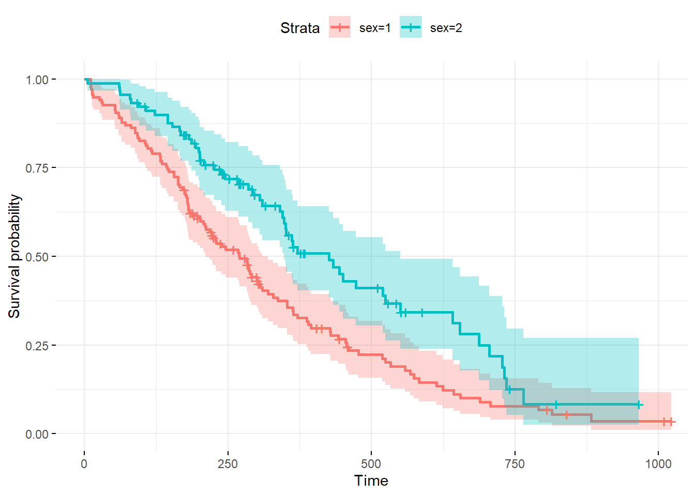

library("survival")
library("survminer")Proportional Hazard Modelling
Introduction
The purpose of the CPH model is to evaluate simultaneously the effect of several factors on survival. It allows us to examine how specified factors influence the rate of a particular event happening at a particular point in time. This rate is commonly referred as the hazard rate.
The Cox model is expressed by the hazard function denoted by \(h(t)\). The hazard function can be interpreted as the risk of dying at time \(t\).
It can be estimated as follow:
\[ h(t) = h_0(t) \times \exp (\beta_1 x_1 + \beta_2 x_2 + \cdots + \beta_p x_p) \]
where
- \(h_0\) is the baseline hazard corresponding to the value of the hazard if all of the \(x_i\) are equal to zero.
- Each \(\exp(\beta_i)\) are the hazard ratios. Id HR < 1the there is a reduction in the hazard and if HR > 1 then there is an increase in the hazard.
Example in R
We will use the standard package survival for this and the package survminer which has some nice plotting functions.
Load the data
data("lung")Warning in data("lung"): data set 'lung' not foundhead(lung) inst time status age sex ph.ecog ph.karno pat.karno meal.cal wt.loss
1 3 306 2 74 1 1 90 100 1175 NA
2 3 455 2 68 1 0 90 90 1225 15
3 3 1010 1 56 1 0 90 90 NA 15
4 5 210 2 57 1 1 90 60 1150 11
5 1 883 2 60 1 0 100 90 NA 0
6 12 1022 1 74 1 1 50 80 513 0and compute a univariate Cox model
res.cox <- coxph(Surv(time, status) ~ sex, data = lung)
summary(res.cox)Call:
coxph(formula = Surv(time, status) ~ sex, data = lung)
n= 228, number of events= 165
coef exp(coef) se(coef) z Pr(>|z|)
sex -0.5310 0.5880 0.1672 -3.176 0.00149 **
---
Signif. codes: 0 '***' 0.001 '**' 0.01 '*' 0.05 '.' 0.1 ' ' 1
exp(coef) exp(-coef) lower .95 upper .95
sex 0.588 1.701 0.4237 0.816
Concordance= 0.579 (se = 0.021 )
Likelihood ratio test= 10.63 on 1 df, p=0.001
Wald test = 10.09 on 1 df, p=0.001
Score (logrank) test = 10.33 on 1 df, p=0.001For a multivariate Cox model it is a simple extension
res.cox <- coxph(Surv(time, status) ~ age + sex + ph.ecog, data = lung)
summary(res.cox)Call:
coxph(formula = Surv(time, status) ~ age + sex + ph.ecog, data = lung)
n= 227, number of events= 164
(1 observation deleted due to missingness)
coef exp(coef) se(coef) z Pr(>|z|)
age 0.011067 1.011128 0.009267 1.194 0.232416
sex -0.552612 0.575445 0.167739 -3.294 0.000986 ***
ph.ecog 0.463728 1.589991 0.113577 4.083 4.45e-05 ***
---
Signif. codes: 0 '***' 0.001 '**' 0.01 '*' 0.05 '.' 0.1 ' ' 1
exp(coef) exp(-coef) lower .95 upper .95
age 1.0111 0.9890 0.9929 1.0297
sex 0.5754 1.7378 0.4142 0.7994
ph.ecog 1.5900 0.6289 1.2727 1.9864
Concordance= 0.637 (se = 0.025 )
Likelihood ratio test= 30.5 on 3 df, p=1e-06
Wald test = 29.93 on 3 df, p=1e-06
Score (logrank) test = 30.5 on 3 df, p=1e-06We can visualise the output as follows.
fit <- survfit(Surv(time, status) ~ sex, data = lung)
# base R
plot(fit)
# ggplot2
ggsurvplot(fit, conf.int = TRUE,
ggtheme = theme_minimal(), data = lung)
